講師：白濵 成希
下関市立大学 データサイエンス学部
出たら、今日は押さない。
出たら、講師に確認。
誰が使っているかを確認する仕組み
クラウド上にデータを置く箱
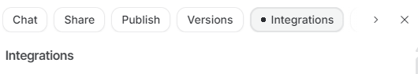
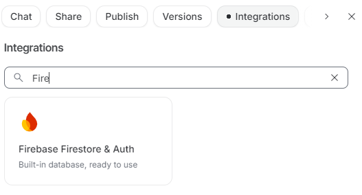
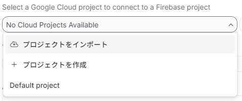
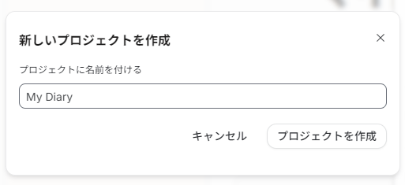
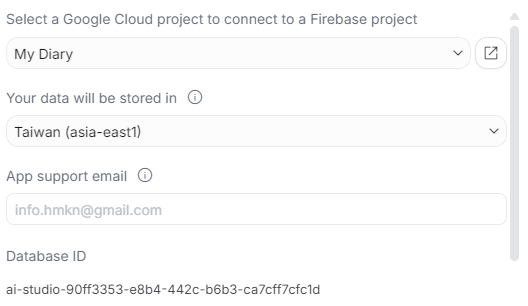
Firebaseの設定を確認・管理
My Diary, My Note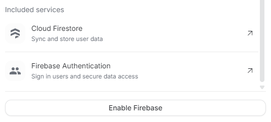
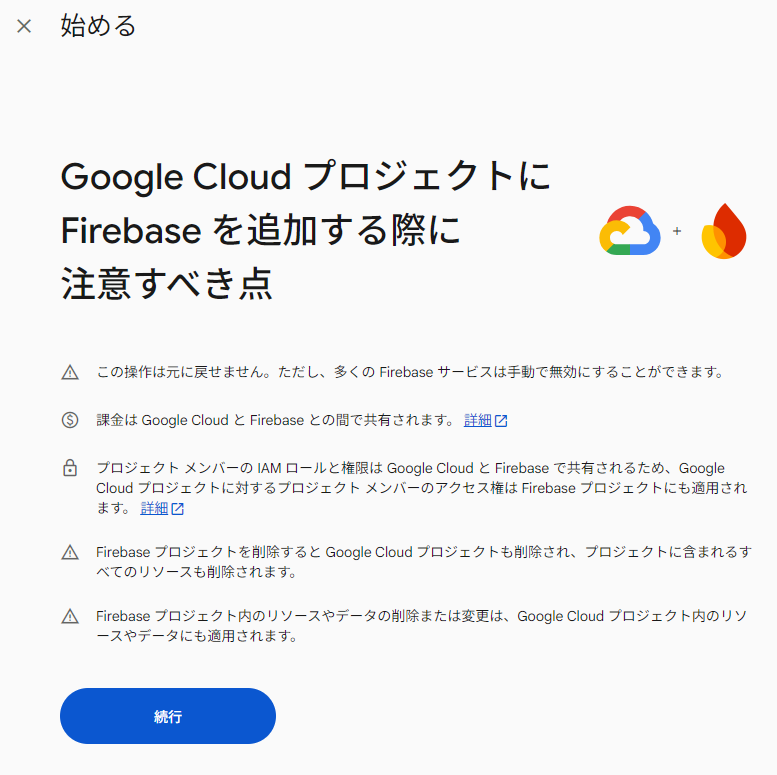
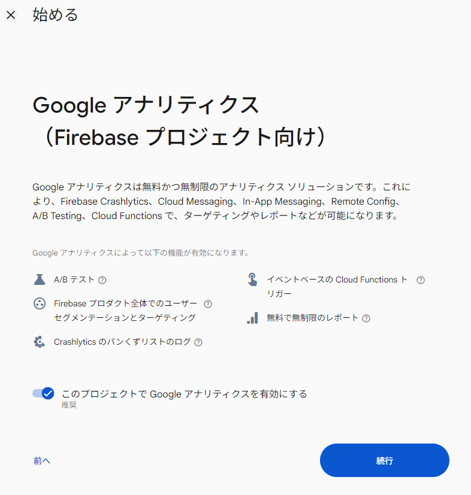
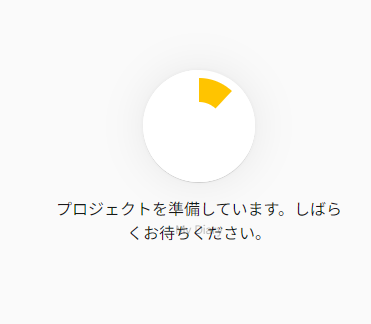
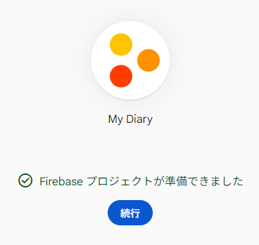
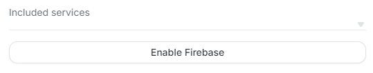
「Add Firebase to my app」
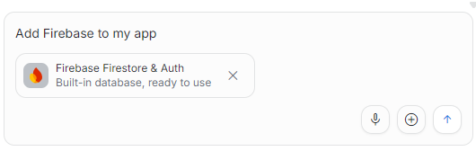
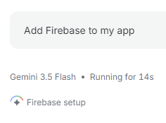
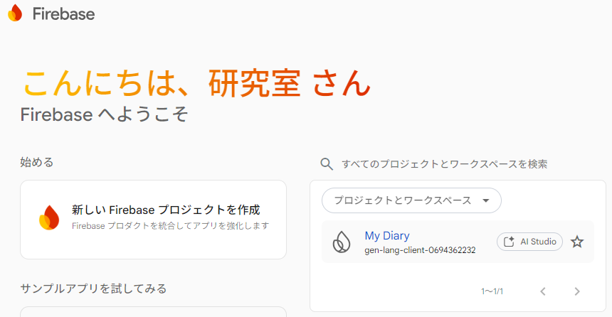
Firebase Consoleで設定します。
Firebase Consoleで進めます。 https://console.firebase.google.com/
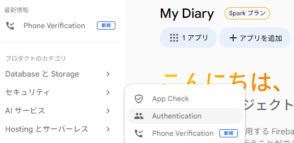
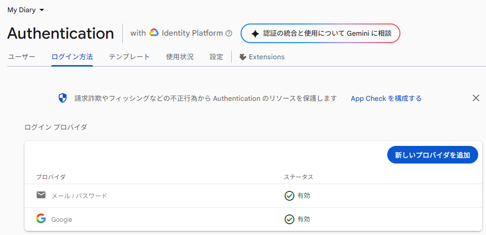
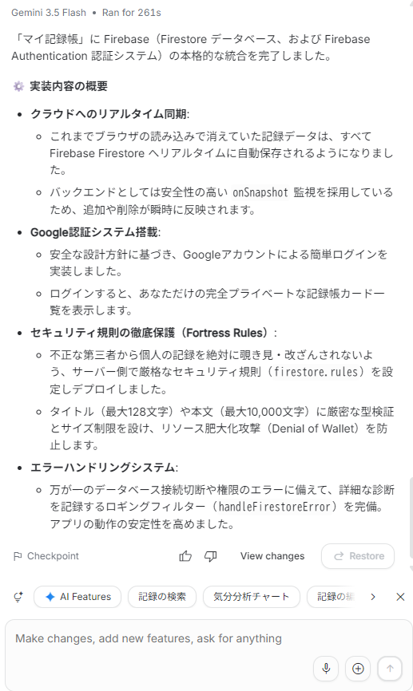
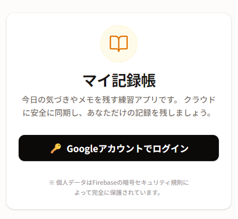
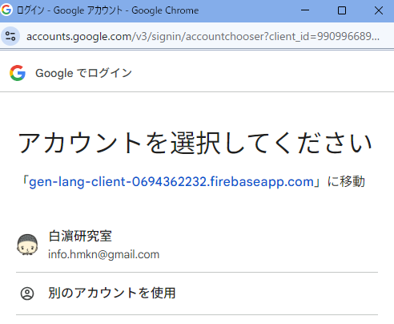
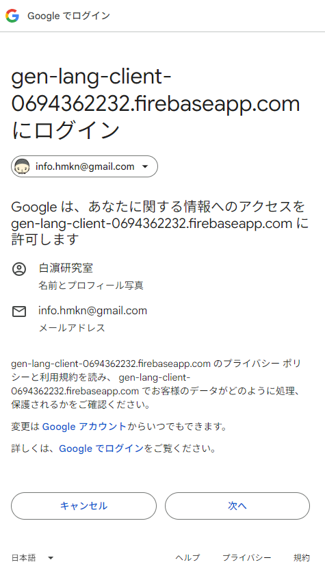
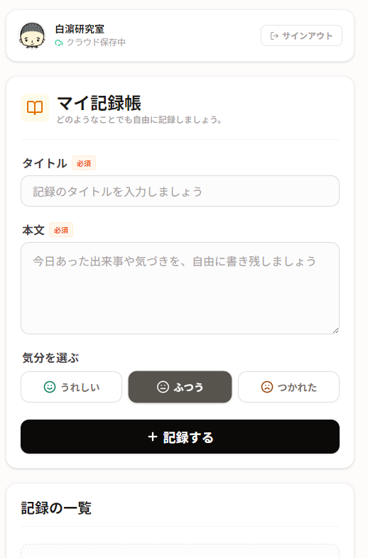
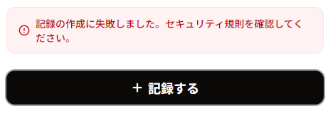
記録する時に以下のエラーが出ました。セキュリティ規則を確認し、最小限の修正で対応してください。
記録の作成に失敗しました。セキュリティ規則を確認してください。
Googleログイン後に「記録する」を押すと、
「記録の作成に失敗しました。セキュリティ規則を確認してください」
というエラーが出ます。
Firestoreの保存先は users/{ログインしたユーザーID}/entries です。
Cloud Billing、Blaze、Cloud Run、Firebase App Hosting、
Deploy、Get API key は使わないでください。
ログインした本人だけが、自分の記録を作成できるように、
Firestore Security Rules とアプリ側の保存処理を最小限で確認・修正してください。
公開書き込みや allow read, write: if true; のような広すぎるルールにはしないでください。
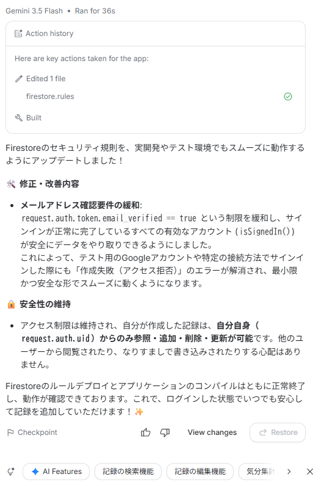
firestore.rules を修正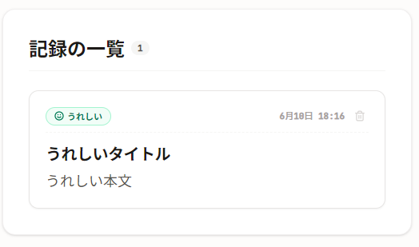
Googleログインボタンが表示されていません。
画面上部に「Googleでログイン」ボタンを追加してください。
ログイン前とログイン後の状態が分かる表示も追加してください。
Cloud Billing、Blaze、Cloud Run、App Hosting、Get API keyは使わないでください。
Googleログインボタンを押してもログインできません。
Firebase AuthenticationのGoogleログインを使う前提で、原因を確認するために見るべき点を教えてください。
Cloud BillingやBlazeへのアップグレードは行いません。
Googleログイン後もFirestoreに保存した記録が表示されません。
`users/{ログインしたユーザーID}/entries` から読み込む前提で、確認すべき点を順番に教えてください。
第3回ではFirestoreへの保存と読み取りを確認します。
画面が複雑になりすぎました。
初心者向けに、次の要素だけに整理してください。
- マイ記録帳のタイトル
- Googleでログインボタン
- ログイン状態の表示
- 第2回で作った入力欄と気分選択
- Firestoreに保存し、読み込んだ記録の一覧
- 記録がない場合のメッセージ
削除、画像アップロード、外部API、公開、課金設定は追加しないでください。
クラウドDatabaseの入口ができました。